History 1935 - 1959
Ogmore, Central Queensland, the brigade spent 14 days doing preliminary work to re-open the mine after an explosion.
May 15. Hart’s Aberdare No.2 mine disaster where four men lost their lives, Booval brigade attended. A canary was taken into the mine, but died after a few minutes. When rescuers found the bodies; they found the men’s cloths had been burned off.
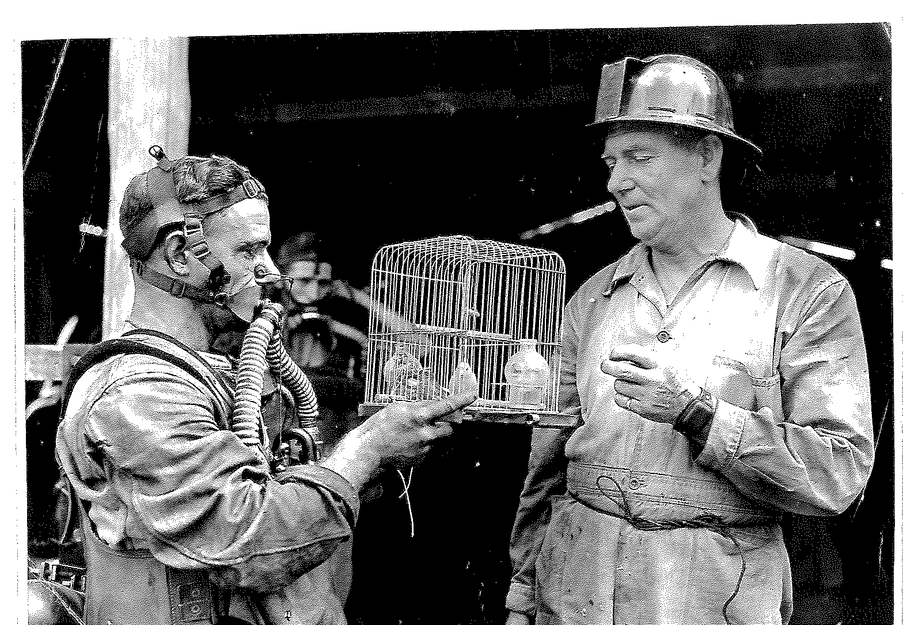
Jack Taylor Rescue member 1922 - 1925, Jim Clarkson 1945 -1947 (in suit), Joe Sbeghen, Rosewood member, in background
Disaster at New Ebbw Vale No.3 Woodend Colliery, when four lives were lost, Booval Brigade operated for six days continuously.
Aberdare Extended Colliery, two lives lost, Booval Brigade attended.
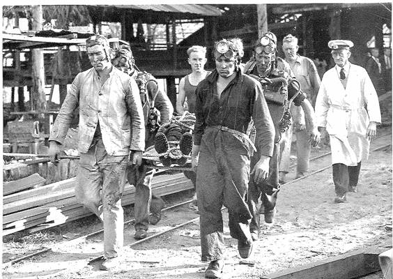
One of the victims being carried from pit head on September 29, 1946
Brigade members, M. Jensen, N. Pringel, J. Clarkson, A.H. Jones. Others in photo; L. Boughen, J. Taylor (Inspector of Mines), Ambulance Officer.
Mines rescue bus was secured in 1947 and housed at the Booval station.
(original photos destroyed in 1974 flood)
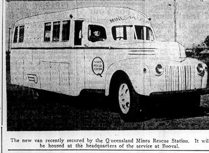
September 16. Steam engine 309 coal hauler collided with a truck at the racecourse level crossing in Bundamba. It was derailed and traveled 30 yards across the road and came to rest through the fence of the Rescue Station. Superintendent Matt Crozier rushed to his veranda to find the whistling, steaming engine in his front garden.

The work load at the Booval station continued to grow and it was decided to build a new brick headquarters. On 22nd April 1949 the Hon. W.M. Moore, M.L.A. Minister for Mines opened the new station in the presence of a large and representative gathering.
The station was known as the “D.A. Gledson Mines Rescue Station” as a tribute to the long and valued service to the Brigade by the late Hon. D.A. Gledson, M.L.A. The name was changed to “Queensland Mines Rescue Station.”
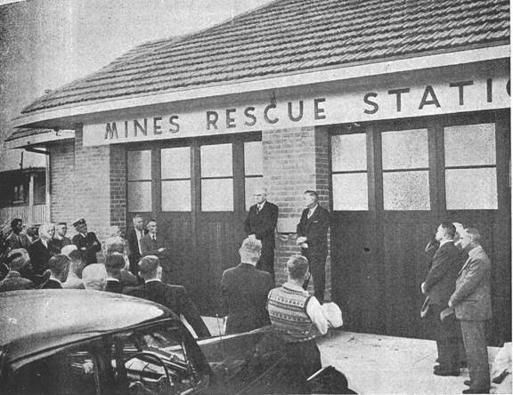
Station opening
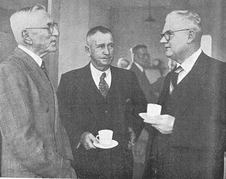
Binnie, Mathieson and Minister at opening

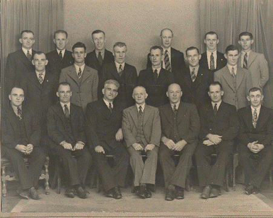
Booval Brigade 1949
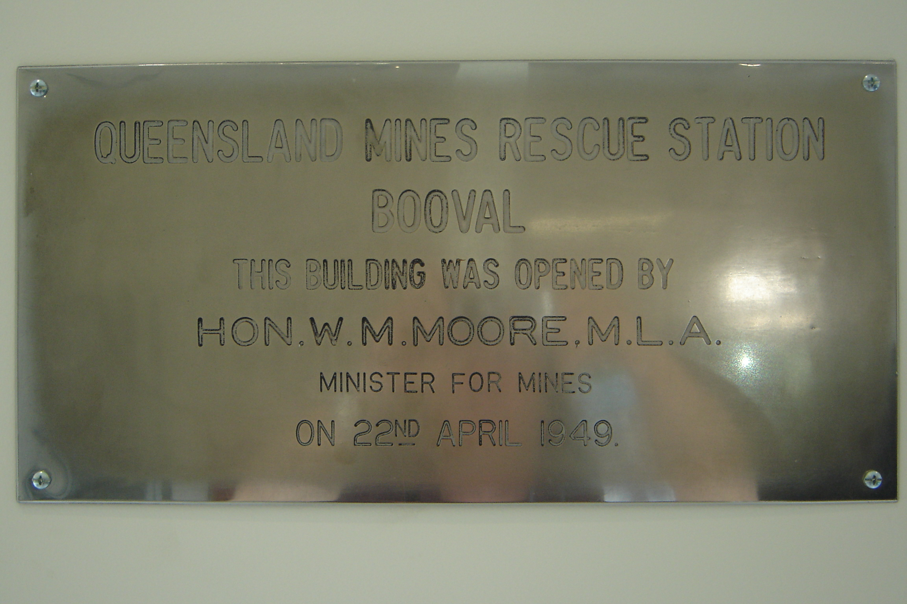

Station plans 1949

Station Plans 1949
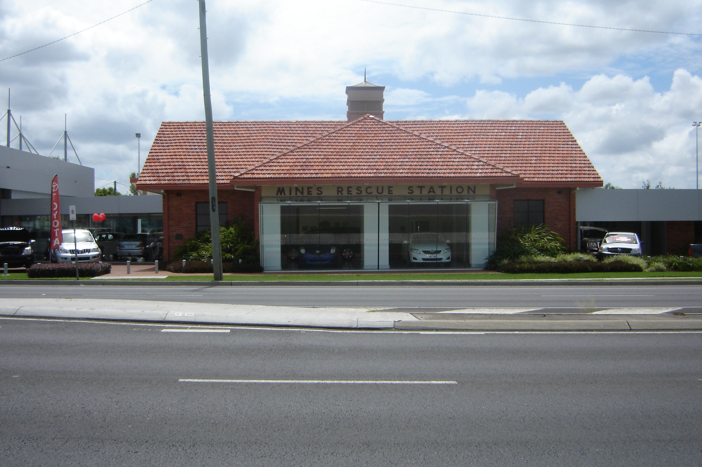
Station in February 2008, now owned by Llewellyn Motors who are great supporters in recognising our Mines Rescue history
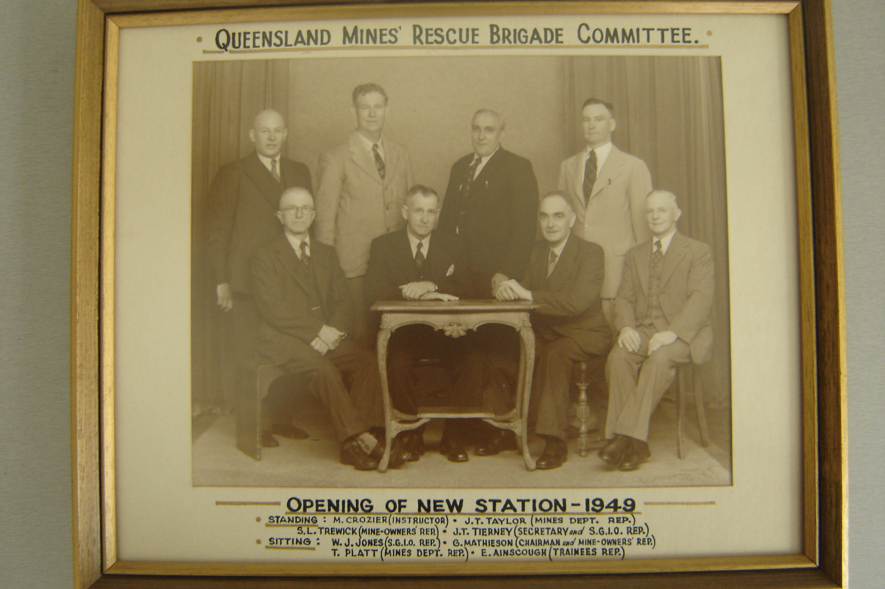
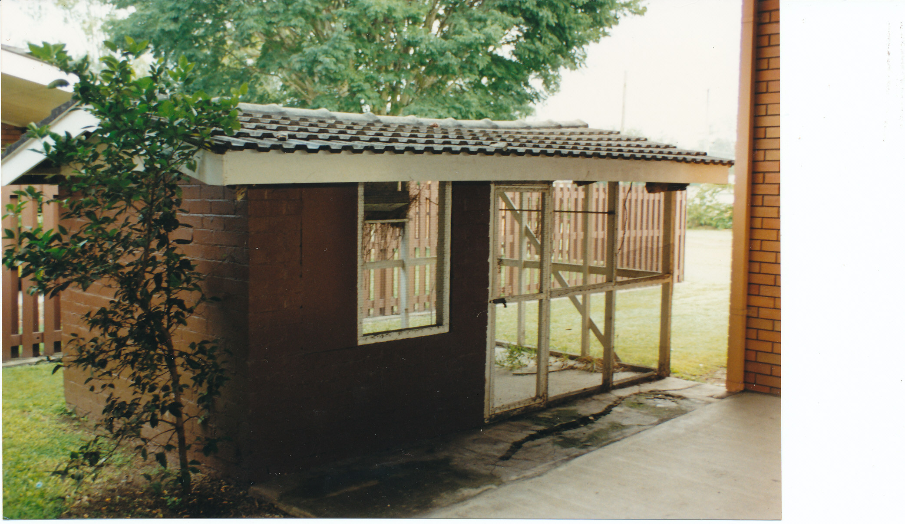
Canary house at Booval
October 13. State mine Collinsville. Carbon-dioxide outburst, seven lives lost.
Friday before the disaster, men ran from the mine after inhaling noxious gas, one miner A. Bulloch asked for Proto suits before returning to the dip but was told they were not working.
Manager of the Scottville mine Ron Spiers was called in to supervise the recovery. Finding only two of the 12 Proto suits satisfactory, he decided to go down himself with overman T. Allen. One and a half hours had been wasted finding satisfactory equipment. None of the rescue party had been given suitable rescue training. Before they got 10 metres, Spiers eyes were streaming because of defective goggles.
September, 13 brigade members travel to Nymboida in N.S.W to render assistance after a mine explosion killed two men.
July 1959. An article written by the coalfields roundsman appears in the “The Coal Miner”.
“Ipswich people take their rescue work very seriously – just how seriously we hadn’t realised until our last visit to that field."
The trouble started with an article in “The Coal Miner” April edition.
"South coast staged rescue contest on March 21 at Bellambi NSW that claimed to be Australia’s first underground competition." This caused the Queensland boys to bristle with indignation. Ipswich, it appears, beat Bellambi to the gun by a fair margin, having held its first mines rescue competition on June 3, 1916.
Our first warning that all was not well came from Bill Lawrie, assistant secretary of the Queensland Coal Owners Association, who said darkly "when your correspondent arrives in Brisbane the boys at Bundamba rescue station will be gunning for him”.
This prediction was confirmed to the full when we visited Bill Owens, the Superintendent at the station, who produced a photo showing eight determined mines rescuers of the 1916 vintage.
We tried to square off with Bill – not very successfully. “Of course” we said, “we know that NSW learnt its mines rescue work from Queensland”. “Yes” he said, "and if NSW send a team up here, we’ll eat them".
That to us seemed a direct enough challenge. A contest open to all rescue stations in the Commonwealth would do a great deal of good for this aspect of mining.
Allen Grulke remembers attending training one evening in late 1959 when Superintendent Owens produced a silver cup and told them it had been donated to rescue by the Mills family for a rescue competition which he hoped would generate more interest in Mines Rescue.
I wonder if Superintendent Owens knew what he was about to start.
The competition has grown and grown since that day in 1959 and is one of the best training tools available to mines rescue still today. It installs pride within teams and friendly rivalry between teams, mines, districts, towns, states and countries.
Teams use the competition to hone their skills for the real thing, the competition in designed to give as much realism as possible to prepare rescue personnel for almost any emergency or situation they may be asked to face.
Let the Competition begin!
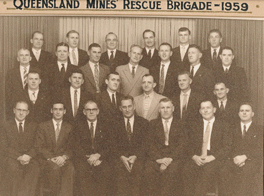
December: The Mills family donate a silver cup for a Queensland Mines Rescue Competition. It was called the “Brooks Challenge Cup” (Mills Cup). First winners of the cup: 1960 – Capt John. F. Embrey, G. Petie, D. Livermore, A. Grulke, A. Haywood. Teams predominantly comprised five members.
Story of the Brooks Challenge Cup, (Mills Cup)
Thomas Mills Senior moved to the Ipswich district in 1885 and worked on the railway until trying mining. He entered a partnership with John Eadie (who had been a member of the team that recovered the bodies from Eclipse mine after flooding in 1893), William Morris, David Cochran and William Jones. Together they opened Rhondda Colliery. Thomas Mills became the manager.
Thomas Mills Junior (born in 1884) took over co-ownership of Rhonda colliery and joined the Mines Rescue Brigade in 1922. He trained on a weekly basis with the brigade until an accident occurred at old Aberdare colliery borehole on a practice run when the team he was in was removing muck stoppings. T. Mills and T. Young had their mouthpieces disconnected from the metal tubing and both men suffered from “inhaling noxious gases”. The advisory committee fully discussed the matter and had previously sent the metal parts to the railway workshops for filing as they were always tearing the rubber. It was moved that the instructor buy new metal parts only from the manufacturer in future.
T. Mills Jnr resigned from the brigade in October 1926 along with T. Young, but Young’s resignation was not accepted and he stayed in rescue until 1936.
When I interviewed Mr. Stan Mills (son of T. Mills Jnr), on October 29, 2008 now aged 92, he remembers as a boy his mother taking him to the hospital as his father was in a mines rescue accident where he was overcome by gases. Records show this was September 22 1925. Stan recalls the Brooks Challenge Cup was in their house at this time and was his father's prize possession. It had a lid on it with a figure of a man standing tall on the lid. He believes his father was Captain of a team that won the cup and it had stayed with his father. T. Mills Jnr later retired and moved to Redcliffe, the cup went with him. He died on March 20 1948 aged 64, his widow returned to Ipswich to live with family and the cup came with her. Merve Mills another son of T. Mills Jnr now in Mines Rescue at Booval (joined in Dec 1959) discovered the cup in his mother’s house and they decide to donate it back to the brigade. Hence the engraving on the cup “Re-presented by the Mills Family”.
Allen Grulke remembers attending training one evening in late 1959 when superintendent Owens produced a silver cup and told them it had been donated to rescue by the Mills family, it had no base, the lid was squashed and a handle was broken off, he told them he was going to fix it up and start running a competition between the teams to regenerate interest in Mines Rescue. Allen Grulke was in the first team to win the cup.
The cup was returned for the 1960 competition where it was competed for until 1996.
Merv was in the team that won the cup in 1961.
I can find no record of T. Mills Jnr competing or any competition between 1922 and 1926.
Could this be a cup from June 3, 1916 and was handed down by T. Mills Senior to his son T. Mills junior?, however there’s no record of a cup for the 1916 competition.
T. Mills Senior was still manager of the booming Rhondda colliery in 1916 when the only recorded competition took place prior to 1960 it was between Silkstone and Bundamba.
Soccer clubs were very big in the mining districts of Ipswich as they were also in NSW and many a man was given employment to play on the team that represented the pit. A record in the Queensland times dated 1907 explains the “Stars” team had won the “Brooks Challenge cup” for 3 consecutive years and J.W. Brooks was an Ipswich jeweler. (Captain A. Richards, V-Capt. A. Gedge)
Another record 02-09-1933 states the Brooks cup was played for by Blackstone and Rosewood at Bundamba.
And again 20-10-69, vandals destroyed the Brooks Cup at the clubhouse of the “Coalstars” soccer team, the damage to the cup was wooden base broken off, cup flattened, very much like the one given to mines rescue by Merv Mills, but 10 years earlier. So this is not our cup.
There is still a mystery behind the origins of the Mills cup, maybe we’ll find out one day
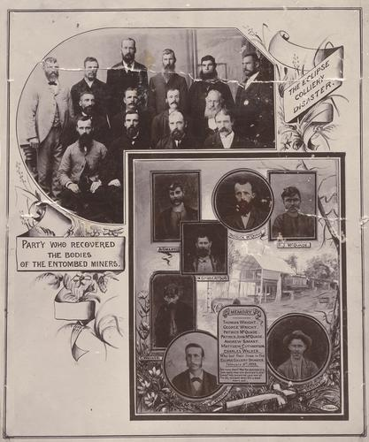
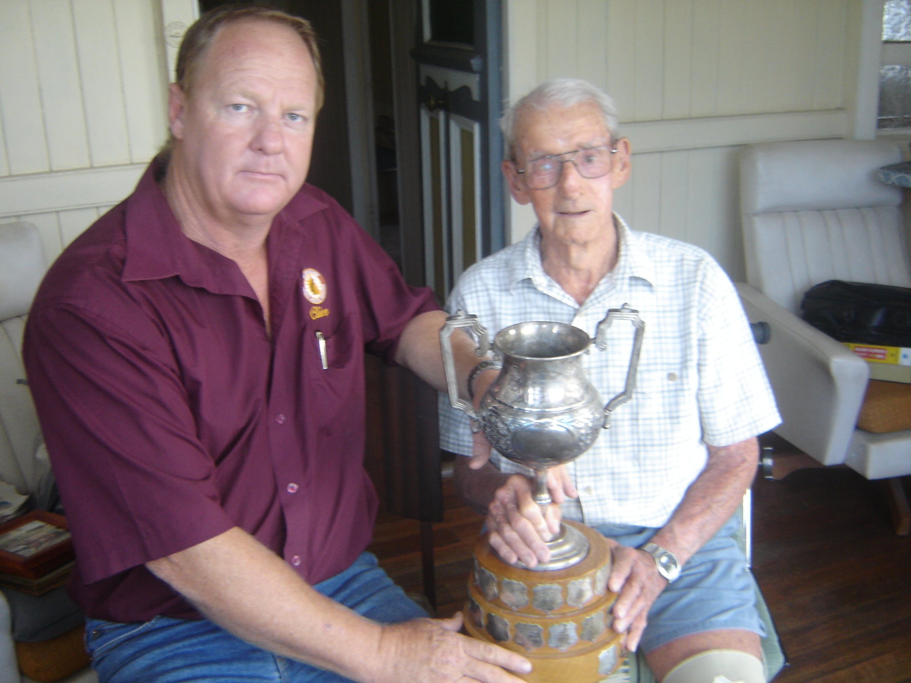
Stan Mills and myself (Clive Hanrahan) with the cup in 2008